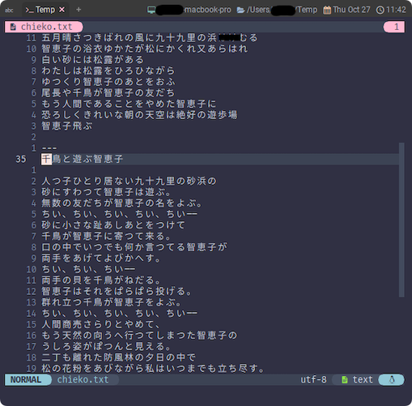

number
まず飛び出してくるのはこれですね。
'number' 'nu' 'nonumber' 'nonu'
'number' 'nu' boolean (default off)
local to window
Print the line number in front of each line. When the 'n' option is
excluded from 'cpoptions' a wrapped line will not use the column of
line numbers.
Use the 'numberwidth' option to adjust the room for the line number.
When a long, wrapped line doesn't start with the first character, '-'
characters are put before the number.
各行の前に行番号を表示する。 cpoptions' で 'n' オプションが除外されている場合、折り返し行では行番号の列は使用されない。
numberwidth' オプションを使用して、行番号を表示するスペースを調整する。
長い折り返し行が最初の文字で始まらない場合、'-' 文字が番号の前に置かれる。
これもやっぱり色々書いてあるんですが、わたしがここでやりたいことは行番号の表示です。
人によってはrelativenumberも気に入るかもしれません。
'relativenumber' 'rnu' 'norelativenumber' 'nornu'
'relativenumber' 'rnu' boolean (default off)
local to window
Show the line number relative to the line with the cursor in front of
each line. Relative line numbers help you use the |count| you can
precede some vertical motion commands (e.g. j k + -) with, without
having to calculate it yourself.
各行の前にカーソルを置くと、その行からの相対行番号を表示する。
相対的な行番号は、いくつかの垂直移動コマンド (例: j k + -) の前に付けることができる |count| を、
自分で計算することなく使用するのに役立ちます。
numberとrelativenumberを組み合わせた場合の動作も説明されています。
The 'relativenumber' option changes the displayed number to be
relative to the cursor. Together with 'number' there are these
four combinations (cursor in line 3):
relativenumber' オプションは、表示される数字をカーソルからの相対位置に変更する。
'number' と共に、以下の 4 つの組み合わせがある (カーソルは 3 行目にある)。
'nonu' 'nu' 'nonu' 'nu'
'nornu' 'nornu' 'rnu' 'rnu'
|apple | 1 apple | 2 apple | 2 apple
|pear | 2 pear | 1 pear | 1 pear
|nobody | 3 nobody | 0 nobody |3 nobody
|there | 4 there | 1 there | 1 there
numberとrelativenumberを一緒に使うと、なんかビッグウェーブ🌊が巻き起こるので、一度は乗るっきゃないです😆
:setコマンドで気軽に乗れます。
-- number と relativenumber を一度で on にする
:set nu rnu

まあ、わたしにはクセが凄くて乗りこなせないんですけどね😉
-- relativenumber だけ切っちゃう...
:set nornu
で、numberwidthも少し気になるんですが...、わたしは入れずにそのままにしてます。
'numberwidth' 'nuw' number (default: 4)
local to window
Minimal number of columns to use for the line number. Only relevant
when the 'number' or 'relativenumber' option is set or printing lines
with a line number. Since one space is always between the number and
the text, there is one less character for the number itself.
行番号に使用する最小限の列数。
number' または 'relativenumber' オプションが設定されているとき、
あるいは行番号を持つ行を印刷するときにのみ関係する。
番号とテキストの間には常に空白が1つ入るので、番号自体の文字数は1つ少なくなる。
あと、"かいパ"🙊 ...じゃなくて、cpoptionsなんですが、こいつはなんか怖いので今のところは避けておきます。